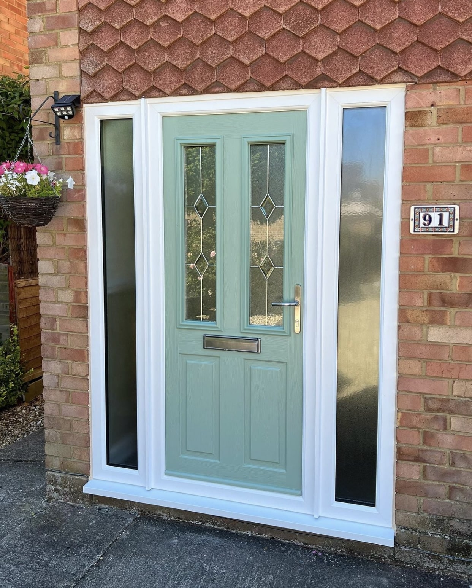
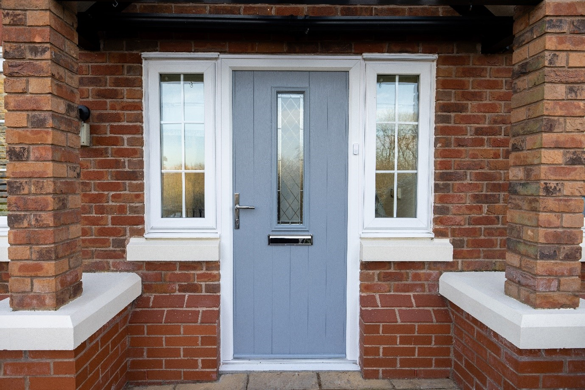

Composite door installations designed to improve the security, insulation and appearance of your home.
A range of styles, colours and finishes are available to suit different properties and personal preferences.
Click on images to enlarge
Black Composite DoorA modern black composite door offering strong security, durability and a clean contemporary entrance.

Chartwell Green Composite DoorA popular traditional colour choice that adds character while maintaining the strength and insulation of a composite door.

French Grey Composite DoorA stylish neutral finish that complements modern and traditional properties while providing a secure entrance.